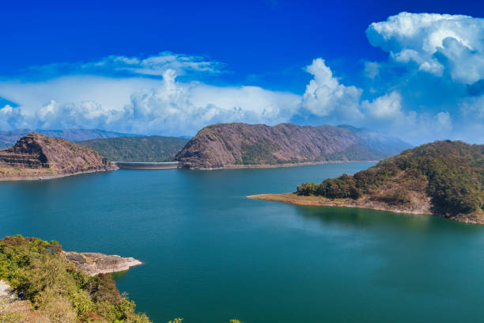

Come And Enjoy Our Culture
TOP DESTINATIONS
ALAPHUZHA

Alappuzha, formerly known as Alleppey, is a municipality in the Alappuzha district of Kerala, India. It is the district headquarters of the district, and is located about 130 km (80.8 mi) north of the state capital Thiruvananthapuram. As per the 2011 Indian census, Alappuzha has a population of 240,991 people, and a population density of 3,675/km2 (9,520/sq mi).
IDUKKI
dukki which lies in the Western Ghats of Kerala is the second largest district in area but has the lowest population density. Idukki has a vast forest reserve area; more than a half of the district is covered by forests. The urban areas are densely populated whereas villages are sparsely populated.
ERNAKULAM

Ernakulam district yields the highest revenue and the largest number of industries in the state. Ernakulam is the third most populous district in Kerala, after Malappuram and Thiruvananthapuram (out of 14 districts). The district also hosts the highest number of international and domestic tourists in Kerala state.
KOZHIKODE

Kozhikode, is one of the 14 districts in the Indian state of Kerala, along its southwestern Malabar Coast. The city of Kozhikode, also known as Calicut, is the district headquarters. The district is 67.15% urbanised.[5]
ABOUT KERALA

Kerala is one of the small states of India in terms of area. it consists of only 1.3 per cent of the total area of India. The state is located in the southwest corner of India. Karnataka and Tamil Nadu bound it on north, east and south and on east by the Arabian Sea.
DISTICTS
- ERNAKULAM
- KOTTYAM
- ALAPHUZHA
- IDUKKI
- WAYYAND
- KANNUR
- KOLLAM
- PATTANAMTHITA
- PALA
- THRISSUR
- PALAKKAD
- THIRUVANANTHAPURAM
- KOZHIKODE
- MALAPURAM